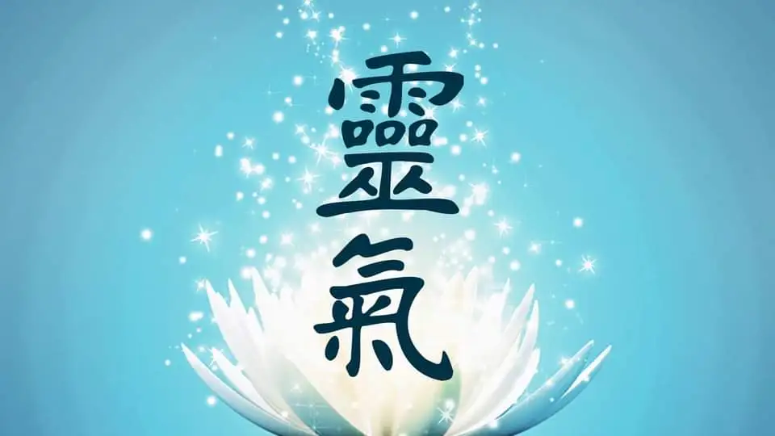

REIKI
Reiki: controllo dell'energia, armonia interiore, matrimonio tra fisico e mente... chissà in quante altre maniere si può descrivere.
Il Reiki non è un tipo di massaggio, come qualcuno crede, ma la conoscenza ed il controllo della propria energia.
Non ci sono controindicazioni nella sua pratica, è facile da applicare, e fa sicuramente bene alla salute.
Ma... che cos'è il Reiki?
Si tratta di un termine giapponese (la pronuncia corretta, anche se praticamente mai usata in Italia, è rai-kei) formato dall'unione di due termini, 'rei' e 'ki'. Entrambi si riferiscono all'energia universale, chiamata in molti modi dalle varie civiltà del presente e del passato: 'chi' dai cinesi, 'prana' dagli indiani, 'energia orgonica' da Willhelm Reich, 'energia bioplasmica' da ricercatori che per primi ne hanno fotografato un aspetto per mezzo della camera Kirlian, e così via....
La differenza tra i due termini è che 'rei' si riferisce all'aspetto universale, unitario di tale energia, mentre 'ki' ne è più specificatamente la manifestazione all'interno di ogni essere vivente.
La storia del Reiki inizia nel 1922 quando Mikao Usui cominciò a diffonderlo, ma è rimasto confinato a pochi eletti fino al 1970, quando l’insegnante Hawayo Takata si mise ad insegnarlo negli Stati Uniti in classi come quelle attuali. Ancora nel 1980, alla sua morte, si contavano solo 22 insegnanti: da allora il Reiki ha avuto una corsa inarrestabile, ed in poco più di 30 anni si è diffuso in tutto il mondo, entrando negli ospedali, nelle scuole, ovunque.
All’inizio del secolo scorso Mikao Usui, esperto di arti marziali e praticante buddista, mise a punto una tecnica atta a ritrovare e mantenere la salute (intesa “all’orientale”, e riguardante quindi sia il corpo che la mente), basata sulla possibilità di diventare canali che veicolano l’energia presente ovunque (detta per questo universale) per trasmetterla attraverso le mani a noi stessi o ad altre persone.
A quei tempi esistevano in Giappone altre tecniche aventi lo stesso scopo, ma il suo metodo, che coniuga semplicità ed efficacia, era completamente diverso e divenne immediatamente noto.
Usui fu un personaggio molto conosciuto nel Giappone di quegli anni e ricevette anche un riconoscimento dall’imperatore giapponese per essersi distinto nella cura dei malati durante il grande terremoto di Tokio del 1923. Morì nel 1926, solo 4 anni dopo aver fondato la sua scuola di Reiki, ma avendo già formato circa 2000 allievi e 14 insegnanti: la diffusione del Reiki è potuta quindi proseguire rapidamente in tutto il mondo.
L’insegnamento di Usui differiva in modo notevole dal Reiki praticato oggi, in quanto era concepito come un cammino spirituale completo ed includeva quindi, oltre alle modalità per trasmettere l’energia, tecniche di meditazione ed insegnamenti vari quali lo studio di poemetti morali scritti dall’imperatore del tempo.
Siccome Usui era il massimo esperto di Qi Gong (Kiko in giapponese) del suo paese, il Reiki in origine era ampiamente mescolato a molti esercizi di questa tecnica. Inoltre era in larga parte basato sull’intuito, che gli allievi sviluppavano praticando nella scuola di Reiki durante un lungo arco di tempo.
Un allievo di Usui, Chujiro Hayashi, aprì una propria scuola ed una Clinica Reiki dove si ricoverò alla vigilia della seconda guerra mondiale Hawayo Takata, giapponese residente nelle Hawaii ma tornata in patria per curarsi.
Qui ella guarì e si fermò per imparare il Reiki ed aiutare Hayashi. Tornata nelle Hawaii la Sig.ra Takata ebbe da Hayashi il permesso di insegnare e con essa dunque il Reiki iniziò ad essere praticato fuori dal Giappone.
Trovandosi a cavallo di due culture, e conoscendo bene quella nostra, ella modificò in parte gli insegnamenti ricevuti eliminando ciò che non era strettamente inerente alla tecnica ed introducendo i trattamenti e gran parte delle posizioni standard usate ancora oggi e che rendono possibile praticare Reiki con profitto anche a chi non ha sviluppato un grande intuito.
Altre modifiche furono introdotte dagli insegnanti successivi in base al progredire dell’esperienza pratica: prese così forma una tecnica che per la sua semplicità e per l’assenza di contenuti filosofici e dogmatici ha potuto affermarsi in tutto il mondo venendo praticata quotidianamente da milioni di persone di ogni credo, razza e religione.
La Sig.ra Takata visse negli USA in un periodo, quello della II guerra mondiale, in cui il Giappone non era certo ben visto, ed addirittura molti giapponesi venivano internati in campi di concentramento (non la Takata, per fortuna). Anche il buddismo non era bene accetto, essendo gli USA un paese molto puritano.
Molto probabilmente fu per questo che Hawayo Takata cambiò la storia del Reiki descrivendo Usui come un monaco cristiano che aveva studiato in università statunitensi: tale storia ha resistito fino a pochi anni fa, quando attraverso ricerche in Giappone si è chiarita la storia del Reiki.
Anche se ora sappiamo che il Reiki praticato nel mondo, compreso in massima parte il Giappone, deriva dalla Takata più che da Usui, tale tecnica è ormai universalmente conosciuta come “Metodo Usui” e non avrebbe senso cambiare nome. Per evitare confusione, quando è necessario specificare viene chiamato “metodo Usui” o “in stile occidentale” il Reiki come insegnato da Takata e da quasi tutti gli insegnanti successivi, e “tradizionale” o “giapponese” quello che si attiene alle tecniche sviluppate da Usui nei 4 anni in cui visse: la sostanza è la stessa, cambia solo la forma.
La prima reazione che può venire in mente quando ci si trova di fronte ad una "nuova" disciplina è generalmente di diffidenza: gli ultimi vent'anni hanno visto la diffusione (e molto spesso la repentina scomparsa) di tecniche e metodologie più o meno occulte e soprattutto più o meno valide, riguardanti ogni settore delle cosiddette scienze alternative.
Se da un lato questo è un segno indubbio della diffusione di una mentalità più aperta e meno dogmatica e contribuisce a preparare l'avvento di una nuova era per l'umanità, dall'altro ha consentito lo sviluppo di grossissimi fenomeni speculativi (maghi, "veggenti", guaritori, astrologi, etc.) che compaiono sulle pagine pubblicitarie di molte riviste o nelle trasmissioni di numerose televisioni private, proponendo formule e soluzioni ad ogni tipo di problema; quasi sempre, però, l'unico a trarne vantaggio è il loro bilancio personale.
Abbiamo allora i canali di energia sui quali agisce l'agopuntura, quelli sui quali si trovano le placche studiate da Giuseppe Calligaris, l'energia presente nei chakra e canalizzata dal 'kundalini' yoga, quella sviluppata e controllata da discipline quali l'Aikido ed il Tai Chi Chuan...; anche qui potremmo proseguire a lungo, ma pensiamo che gli esempi che vi abbiano dato possano essere sufficienti per comprendere l'universalità del discorso.
Reiki, quindi, significa, in sintesi, mettere in sintonia la propria energia personale con quella universale.
Al di là degli esempi riportati, possiamo dire che tutte le principali civiltà sviluppate nei secoli hanno codificato in varie forme la nozione dell'esistenza di questa energia universale, nei tempi recenti a livello filosofico e nell'antichità sotto forma di conoscenza esoterica o misterica, trasmessa nel contesto delle varie forme iniziatiche.
In parallelo è stata trasmessa la conoscenza delle tecniche di guarigione, di cui troviamo traccia praticamente ovunque: dall'antico Egitto alle tradizioni pellirossa, dalle essenze essene ai Rosacroce...
I benefici del Reiki si manifestano su tutti piani: a livello fisico, a livello mentale/emotivo e, per chi è aperto a questa possibilità, anche a livello spirituale.
A livello fisico, a seconda del disturbo o della malattia, possono essere necessari più trattamenti di Reiki ricevuti con costanza per ottenere gli effetti positivi; a livello emotivo e mentale invece la sensazione di benessere è molto spesso quasi immediata.
Chi si sottopone a un trattamento Reiki può sperimentare da subito una maggiore serenità e stabilità emotiva. Non solo, il Reiki viene utilizzato sempre più spesso in sinergia con sistemi di cura più tradizionali: nell’Ospedale San Carlo Borromeo di Milano, per esempio, il Reiki è previsto nelle cure del Centro di Medicina Psicosomatica; nell’Ospedale San Giovanni Battista di Torino viene combinato alle cure di chemioterapia per diminuire gli effetti collaterali dei medicinali; e ancora, viene praticato all’Istituto Tumori Regina Elena di Roma, dove è stato presentato un progetto di ricerca relativo all’impatto del Reiki sugli effetti collaterali nei pazienti affetti da tumore testa-collo in trattamento radioterapico.
Uno degli aspetti più belli del Reiki è che, oltre a dare benessere fisico ed emotivo, è anche facile da imparare e tutti lo possono usare. L’apprendimento di questa tecnica avviene su tre livelli.
Sono tanti gli aspetti del Reiki che incuriosiscono: non solo il fatto che tutti possano praticarlo, ma soprattutto l’evidenza che funziona e porta risultati, indipendentemente da quanto si possa essere più o meno scettici rispetto a questo mondo. Il Reiki funziona lo stesso, perchè è energia vitale.
Il Reiki è un metodo di cura naturale, ma anche una pratica di autoguarigione. Puoi fare Reiki su te stesso dopo aver frequentato il corso di primo livello, avendo quindi ormai appreso la tecnica e soprattutto dopo esser stato “attivato” (liberato come canale energetico) dal maestro Reiki.
Bastano 20 minuti (21 per essere precisi!) per eseguire un trattamento su te stesso, passando le mani sui diversi chakra, dall’alto verso il basso e lasciandole in posizione per 3 minuti su ogni chakra. Il Reiki non ha controindicazioni, porta solo benefici e, che tu ci creda o no, funziona.
Ciò che rende il Reiki una tecnica tanto apprezzata e praticata da milioni di persone in tutto il mondo è il fatto di essere semplice da imparare e praticare, e al tempo stesso estremamente efficace. In Occidente siamo abituati ad associare l’efficacia alla complessità, più una cosa è strutturata e articolata e più ha valore ai nostri occhi. La pratica del Reiki dimostra invece che la semplicità funziona. Tutti possono facilmente imparare la tecnica Reiki e godere, da subito, dei tantissimi benefici che il Reiki porta con sé.
Dal punto di vista più specifico della guarigione naturale, i processi innescati dal Reiki agiscono su tutti i piani dell'individuo, non solo su quello fisico: con il processo di guarigione viene attivata una armonizzazione di tutti gli squilibri passati e presenti, spesso coinvolgendo problemi oramai dimenticati o rimossi.
Per questo motivo, spesso riaffiorano acciacchi ormai dimenticati o problemi emotivi che si credeva di avere definitivamente superato.
Si tratta di un vero e proprio processo di disintossicazione, analogo a quello che accompagna un periodo di digiuno: tutte le tossine fisiche e psichiche vengono rimesse in circolo per essere poi definitivamente espulse.
Quasi sempre, infatti, dopo i primi trattamenti il paziente invece di migliorare peggiora; la cosa in sé non è strana per chi già conosce tecniche analoghe di guarigione naturale (es. l'omeopatia), ma può mettere profondamente in crisi chi non è preparato, o magari non è disponibile ad affrontare tutte le conseguenze dei processi di una guarigione.
Riportando in equilibrio l'energia individuale con quella universale, il Reiki permette tra le altre cose l'avvio di un processo globale di guarigione naturale; ovviamente, parlare di riarmonizzarsi con la realtà significa ben più che risolvere i propri problemi fisici od emotivi.
Significa riconquistare il senso più profondo della propria esistenza, imparare ad accettare ed interpretare il significato di ogni evento.
Tutto questo è particolarmente prezioso nel mondo occidentale, abituato da troppo tempo a ragionare in forma analitica, scomponendo, sezionando, interpretando i singoli elementi e perdendo molto spesso di vista il quadro globale al quale appartengono.
La visione che scaturisce dall'approccio al Reiki è invece olistica, globale: la Realtà è una ed una sola, al di là delle diverse manifestazioni apparenti a livello di spazio e tempo e di tale Realtà siamo parte integrante e niente affatto privilegiata.
Il nostro corpo, la nostra mente, la nostra coscienza, non sono che aspetti, sfaccettature di tale quadro, paragonabili ai puntini che costituiscono un'immagine riprodotta su un quotidiano, importanti solo per la loro relazione con il disegno di cui fanno parte.
Anche per questo, si dice che il Reiki non può manifestarsi che attraverso l'amore: se comprendo fino in fondo il fatto che io ed il mio prossimo siamo una sola cosa non posso fare a meno di amarlo come me stesso, perché in ultima analisi il mio prossimo è me stesso. Solo partendo da questo tipo di considerazione è possibile aiutare realmente qualcuno; fintanto che ci si sente importanti, o anche solo "buoni", per il fatto di poter guarire qualcuno, non ci si pone sul suo stesso piano, ma ci si colloca su di uno scalino posto più in alto. A quel punto, non è più l'energia universale, il 'rei', ad agire attraverso di noi ma la nostra energia personale, il nostro 'ki'.
Fare Reiki vuoi dire imparare ad essere canali, a "lasciar agire" la Realtà; e riuscirci significa indubbiamente aver innescato un grosso processo di guarigione e di maturazione interiore.
I più grossi problemi di fronte al Reiki sono quasi sempre legati alla volontà di autoaffermazione dell'ego, alla difficoltà di mettere un briciolo di umiltà in quello che si fa, senza sentirsi sempre al centro di tutto ciò che accade.
Il Reiki è semplice, estremamente semplice: non ci sono nozioni complesse da memorizzare o da comprendere, l'esperienza viene gestita molto più dal cuore che dalla mente.
L'unica cosa che viene richiesta è la disponibilità; il resto, dopo l'apertura dei canali energetici operata attraverso le quattro iniziazioni avviene in maniera del tutto naturale.
Non solo, ma numerose osservazioni sperimentali hanno dimostrato che l'energia del Reiki, una volta entrata nel corpo, si dirige spontaneamente dove maggiormente è necessaria, comportandosi come un liquido che aderisce spontaneamente alle pareti del suo contenitore.
I livelli del Reiki nel metodo Usui sono tre ai quali segue il Master.
Il Reiki infatti è ordinato in livelli distinti di cui il primo è quello fondamentale e parte dal corpo fisico; il secondo aggiunge degli strumenti per far fluire più Reiki, per accedere alla sfera mentale ed emotiva e per utilizzarlo in modo più ampio; il terzo livello aggiunge due tecniche supplementari per incentivare un profondo lavoro su di sé e sugli altri, permette di portare equilibrio direttamente alla sfera spirituale e di favorire il riallineamento non solo della colonna vertebrale, ma in un ottica più ampia, delle persone nel proprio percorso di vita.
Il livello Master invece è un percorso che serve per preparare al meglio i futuri insegnanti di Reiki.
REIKI PRIMO LIVELLO
È il Reiki vero e proprio: contiene tutti gli insegnamenti che servono a praticare Reiki su di sé e su altre persone, animali, piante, e molto altro, per cui molte persone si fermano qui. Il corso di primo livello dura circa 12/14 ore divise in 2 o 3 sessioni in giorni consecutivi.
Il partecipante dal primo giorno è già in grado di far scorrere l’energia attraverso di sé ogni volta che lo desidera. Nel corso vengono insegnate e sperimentate le posizioni standard per far Reiki su di sé (auto-trattamento) e sugli altri, gli usi del Reiki nelle emergenze, in presenza di malattie e nelle più varie situazioni (bambini, medicine, bevande, cibi, creme…).Inoltre l’insegnante trasmette con esempi la sua esperienza pratica, in modo che gli allievi possano avere una visione più ampia possibile dell’utilizzo della tecnica.
Nel corso di Reiki per bambini invece gli argomenti teorici sono limitati allo stretto indispensabile ed espressi attraverso un racconto metaforico creato ad hoc, mentre la pratica è preponderante.
REIKI SECONDO LIVELLO
Dopo aver utilizzato e compreso il Reiki a fondo, a volte può nascere l’esigenza di saperne di più, di approfondire la conoscenza in questa disciplina traendone ulteriori benefici. In questo caso si può accedere al II livello, dopo un breve colloquio con l’insegnante. Consigliamo comunque di lasciar passare almeno sei mesi dal I livello: spesso le persone aspettano anni.
Il corso di secondo livello dura circa 9 ore di seguito o divise in 2 sessioni in giorni consecutivi.
Il secondo livello comprende principalmente la possibilità di fare scorrere più energia, di fare Reiki a distanza (cioè senza dover toccare l’oggetto del trattamento Reiki) e di fare il cosiddetto Reiki mentale, che agisce direttamente sul piano psicologico-emotivo e quindi ad un livello più profondo di quello fisico.
Esiste una consuetudine in tutto il mondo in virtù della quale coloro che hanno partecipato ad un seminario di I o II livello possono ri-partecipare gratuitamente a seminari dello stesso livello presso qualunque insegnante.
Questo perché è molto utile, dopo aver praticato per un certo periodo, ri-partecipare per portare la propria esperienza, porre domande, ripassare… le cose si comprendono ben diversamente, dopo che si ha già una certa esperienza.
REIKI TERZO LIVELLO
Con il primo livello si opera passando dal corpo fisico, e da qui il benessere si diffonde ad ogni livello, mentre con il secondo livello c’è la possibilità di accedere direttamente alla sfera mentale. Il terzo livello Reiki permette invece di operare in modo diretto a livello spirituale.
Nel terzo livello come da noi proposto (al contrario dei primi due livelli, il terzo differisce molto nei contenuti da una scuola all’altra) si potrà acquisire la facoltà di far fluire il Reiki direttamente nella nostra parte più profonda, sia essa chiamata anima, spirito, o come si preferisce. Impareremo inoltre a ri-allineare le persone a quel progetto di vita che, secondo la maggior parte delle tradizioni e delle culture, è il motivo per cui siamo al mondo.
Vediamo qui di seguito queste tecniche più in dettaglio.
1 - Reiki spirituale
Sebbene il Reiki agisca a tutti i livelli (tipicamente si distingue in corpo, mente e spirito) “entrando” dalla sfera fisica (con il primo livello) o mentale (con il secondo livello) ed essendoci in genere in questi ambiti molti squilibri su cui agire, squilibri antichi o che ci procuriamo quotidianamente, il Reiki rischia di non arrivare a sufficienza al livello spirituale. Con questa tecnica l’energia arriverà e riequilibrerà direttamente la sfera spirituale, in modo da rinforzare questa parte di noi stessi.
Quante volte ci sentiamo “arrivati alla frutta” e ci perdiamo d’animo, quante volte avremmo bisogno di energia per risollevarci e ricominciare dopo eventi traumatici, oppure semplicemente per seguire la nostra strada con maggior coraggio e forza?
Il Reiki spirituale ci darà proprio questo, in modo talmente marcato che un solo trattamento già dà risultati evidenti. Potrai praticarlo su di te, sugli altri, di persona o a distanza. Come dicono molti allievi, l’impressione sarà che “scorra più vita dentro di noi”!
2 – Allineamento Reiki
Quante persone sentono di essersi “perse per strada” lungo il proprio percorso, dimenticando il proprio scopo nella vita o non avendo le forze per realizzarlo?
La tendenza a seguire la mente anziché il cuore, traumi, paure, il poco ascolto di sé, credenze limitanti e condizionamenti di vario genere potrebbero aver provocato un allontanamento dal nostro progetto di vita originario e come conseguenza non siamo più allineati con esso, non fluiamo più agevolmente nella corrente della vita e ci sentiamo persi.
Spesso queste “storture” si rendono visibili anche sul piano fisico, ed in particolare nell’ossatura che tende a mantenerle anche quando sono stati risolti i traumi originari, in un circolo vizioso in cui prima la mente ha influenzato il fisico e poi viceversa.
L’Allineamento Reiki permette di riallineare i tre livelli della persona (corpo/mente/spirito) nel proprio progetto di vita, riportandola in linea con ciò che avrebbe dovuto essere e che non è: in sintesi favorisce il ritornare su tutti i piani ad essere ciò che eravamo già ma che avevamo dimenticato.
Il Reiki ci permette di ritrovare l’equilibrio, ma potremmo essere in equilibrio senza essere “sulla nostra strada”: l’Allineamento Reiki cerca di rimediare a questo secondo problema.
Il trattamento di Allineamento Reiki è costituito da un ciclo di 4 o più sessioni effettuate di persona e a distanza ed avviene sempre per il massimo bene del ricevente: la colonna vertebrale e l’apparato muscolo-scheletrico si riallineano dolcemente così come il nostro intero sistema energetico.
Al corso di terzo livello si può accedere dopo almeno 9 mesi di pratica di secondo livello, una ri-partecipazione ad un secondo livello ed un colloquio con l’insegnante.
Il terzo livello implica l’uso del quarto simbolo Reiki e due diverse attivazioni, una per ogni tecnica sopra descritta.
REIKI MASTER
Diventare Master Reiki è un percorso più che un corso ed ha come scopo quello di formare insegnanti di Reiki che amano diffonderlo con cuore, impegno e passione. Non è finalizzato ad essere più efficaci nei trattamenti o ad essere più “potenti”: non vogliamo illudere nessuno su questo punto, per acquisire nuovi strumenti terapeutici è sufficiente il terzo livello.
Essere insegnanti significa comprendere profondamente ciò che si dice nei corsi, avere una vasta esperienza diretta del Reiki in ogni sua applicazione, saper esporre correttamente gli argomenti, saper prendersi cura dei propri allievi e relazionarsi con loro.
Il conseguimento del Master Reiki prevede almeno sei mesi di pratica di terzo livello, la ri-partecipazione gratuita al maggior numero possibile di corsi di primo, secondo livello e terzo livello (variabile in base al curriculum reikistico dell’aspirante Master), l’approfondimento di alcuni argomenti, un esame per dimostrare la profonda conoscenza di tutti gli argomenti dei tre livelli, l’attivazione a Master Reiki e Master di Allineamento Reiki, l’insegnamento delle attivazioni ed un affiancamento ad un corso di Reiki per ogni livello (anche più se l’allievo desidera) tra quelli in calendario.